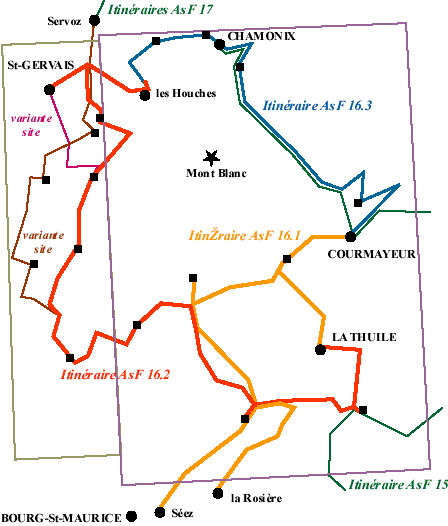
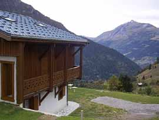

Les itinéraires AsF© sur la zone

itinéraires AsF© 15 et AsF© 17
Se raccorderont au refuge Deffeyes pour AsF© 15 et à Chamonix et à Courmayeur pour AsF© 17.
Variante AsF© 16.2.7 et 16.2.8 W
Etape alternative le Truc vers St Gervais. Description :
Des chalets du Truc, suivre le sentier vers l’E. Avant de commencer la descente, prendre le temps de monter au sommet du Truc (AR en 30 mn), un magnifique point de vue.
Descendre en direction des chalets de Miage que l’on voit en bas. Au pont à 1560m, prendre à G le bon chemin 4x4 qui contourne le Truc. Après une courte montée, il descend régulièrement. A 1380m (banc), suivre le chemin qui descend à D : on sort de la forêt, chalets d’alpage.
Continuer sur ce large chemin ; on a à D un ancien four, puis une maison rénovée, et on rentre à nouveau en forêt. Juste avant de traverser le torrent de Miage et avant la buvette, prendre à G le sentier GR5 qui, par une descente un peu raide, conduit au hameau de Tresse.
On trouve une petite route goudronnée : elle traverse le hameau, la route D902, le Bon Nant et remonte un peu, en direction du Quy. Dans le 1° virage, laisser le GR et prendre à D le sentier balisé du Val Montjoie.
Ce sentier traverse un ruisseau, puis, à travers prés et bois, longeant le Bon Nant, il conduit à St Gervais par le chemin du Manège, l’ancienne patinoire et le pont du Diable.

Itinéraire AsF© 17.0
Trajet alternatif pour AsF© 16.2 (étapes 5 à 8), non retenu pour le guide AsF© 17.
Description à faire :
étape 1 = refuge Croix du Bonhomme - refuge de Roselette
étape 2 = refuge de Roselette - chalet de Porcherey
étape 3 = chalet de Porcherey - gîte de Bionnassay
étape 4 = gîte de Bionnassay - Servoz
Photo : le mont Joly, depuis le refuge du Fioux.